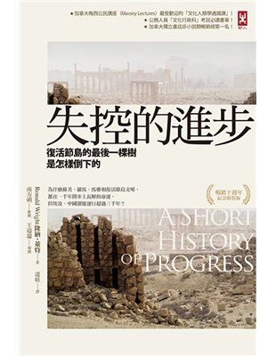

失控的進步 — 復活節島的最後一棵樹是怎樣倒下的

我們來自何處？我們是誰？我們要往何處去？ — Paul Gauguin
從創世紀到進化論，從迷信到體認到自己曾經是猿人的事實，到尼安德特人滅絕智人崛起，第一章作者帶我們認識了自己的過去。
你無法想像一群人取代另一群人時，沒有使用暴力 — Milford Wolpoff
關於尼安德特人的滅絕推論有很多，例如《人類大歷史》作者的推論是智人發展了語言，而本書作者則是歸咎於尼安德特人不善於遷移，所以即便擁有不輸於智人的智慧，但氣候變遷導致狩獵難度增加，再加上對環境變化更能適應的智人加入競爭而處於劣勢，最後被智人屠殺而滅絕，種族大屠殺這種事，我們很早以前就做過。
人類，不過就是個暴發戶 — H. G. Wells
在很久很久以前，「進步」跟大自然的演化一樣，是緩慢的，無聊的，所有變化都要經歷好幾十甚至幾千代才能被看見，人類三百萬年前就會用簡單工具，五十萬年前才開始會用火，上面說的智人和尼安德特人的 「戰爭」 至少持續了好幾千年甚至萬年。學會使用語言讓人類突破了自然演化的速度：從石頭變成鐵，花了三百萬年，從鐵變成氫彈卻只花了三千年，而到了近代，往往小時候學的東西長大後就落伍了。至此，人類就脫離了大自然演化的掌控，我們文明的進步速度遠比基因變化的速度快得多，作者稱這現象爲「大自然偉大的實驗」。
人類就算手中只握有火把和石頭製成的武器…..仍是世界上最危險、最無情的掠食者 — Crosby
在冰河期尚未衰退以前，人類已經在各個大陸生了根，這波遷移潮導致了各種大型獵物滅絕，人類不止一次有系統性的用趕盡滅絕的方式進行狩獵，手段跟人數也是前所未有的，對動物如是，到了之後的北美原住民亦如是。隨着人口的增多，大型獵物也漸漸絕跡，野生獵物無法支撐人口需求，人類開始馴化動植物 — 農業和畜牧業開始發展。
人類以我們所擁有的氣候，建造了現有的文明。而地球氣候最好的狀態，就是過去數千年來的氣候了 — Richard Alley
過去的一萬年，地球氣候保持着異常的穩定，讓各地的人類得以開始「馴化」農作物，發展出了稻米、小麥、馬鈴薯等作物。讓人驚訝的是，除了農業，即便在各自被隔離，動物、植物、環境和技術都有相當大差異的情況下，人類卻可以發展出細節有別，但精髓一致的文明，例如道路、城市、運河、國王、農民、廟宇、社會階級等等。這暗示了人類是可預測的生物，受到類似的需求如慾望、期待、和愚蠢所驅動。正因爲人類發展的相似度，使到依賴穩定氣候發展出來的文明正在受到越來越嚴峻的挑戰，而人類正如預測般愚蠢的在不斷在為氣候變化火上加油。
偉大的文明不是被殺死的，是它們自己結束了生命 — Arnold J. Toynbee
作者接下來舉了復活節島和蘇美文明當例子，復活節島在那個時代因爲航海技術落後，算得上是個與世隔絕的島嶼，其文明也是獨立發展的，而活節島的巨石像會被稱爲奇跡的原因是當英國上校庫克發現復活節島時，島上的木材資源和水資源非常少，甚至說出了「大自然對這個地方實在太吝嗇」，在這種環境下要建造巨石像無疑是奇跡沒錯，但隨着科技技術的發展，科學家漸漸查出了巨石像之謎：小島上本來資源很非常充足，人口在高峰期甚至達到了一萬人之多，而島的大小只有166平方米。由於人口的增長，島上的人也分裂出了各種階級，開始了偶像崇拜的競爭，沉迷於製造巨石像，由於人口的爆增，製造的巨石像的速度越來越快，資源也越耗越快，明明站在島上的高處就可以一眼看得出樹木越來越少，也沒想要停止伐木、保護幼苗、重新造林，明明樹木都被砍光了，剩下的木材也只用來製造巨石像而不是蓋房子建船，最後，剩下的船都壞光了，無法出海捕魚，海鮮沒了，船沒了也意味着逃走也變成不可能，島上開始了內戰，加上缺乏糧食，人口急速減少，後來歐洲人甚至聽聞有食人盛宴的存在。
土地與水的健康，以及負責保存水的森林，是任何文明生存與成功的唯一基礎 — W.H.Auden
蘇美文明一開始起源于新月沃土，作者稱它爲現實世界的伊甸園，但如同復活節島文明一樣，人類榨乾了該地的資源，不同于隔絕的復活節島，蘇美文明的人有其它地方逃，第二個地點就是現在的伊拉克，現在的人看到半沙漠化的伊拉克大概很難想像，八千多年以前伊拉克的土地很肥沃，是個有魚蝦草澤的水鄉。物理上毀滅蘇美文明的是洪水，由於缺乏高地，美索不達米亞平原特別容易受到乾旱和洪水的侵襲，本來並不會那麽嚴重致命的洪水，卻因爲不斷的伐木焚燒、過度放牧耕犁等活動，破壞了土壤，形成了不透水的堅硬頂層，造就了又急又猛地洪水，把自身文明冲刷殆盡。但這不是造成伊拉克目前半沙漠化的原因，真正原因是鹽：原本河川會將岩石與土壤中的鹽分冲刷出來一路夾帶到海中，但當人們將水引入到乾旱的土地，水分大幅蒸發后留下的只有鹽巴；灌溉也使土地吸飽水分讓帶鹽分的地下水得以向上滲透。在這情況下除非有良好的排水系統和有足夠的雨水冲刷土壤並能讓土地長期休耕，不然一定會變鹽田。作爲史上最大規模灌溉系統的建造者，蘇美人無法預見其後果無可厚非，但令人絕望的是這種搶劫未來的做法不斷重複甚至延續到了現代。今天，伊拉克的一半灌溉地是鹽地，比例之高為世界之冠。作者認爲羅馬和瑪雅文明也是因爲了類似的原因而瓦解，儘管證據顯示瑪雅人更懂得如何保育土地，但因爲明明可以用節育、減少皇室和軍隊開銷，透過梯田方式再造土地，他們更加固執己見，建造更高的金字塔、讓人民更加辛勤的工作，要將自然的最後一滴資源都榨出來，最后超載了。作者在最後也提了文明史較長的古埃及和中國，古埃及文明可以持續如此久的原因是古埃及人不會在產糧的地上建築，而且人口成長也低於平均值，非常緩慢；
當一個人口眾多的國家，各人行動全憑儒家簡單粗淺而又無法固定的原則所限制，而法律又缺乏創造性，則其社會發展的程度，必然受到限制。即便是宗旨善良，也不能補助技術之不及 — 黃仁宇
而中國，作者認爲動蕩的朝代更迭、戰爭饑荒和疾病和有助於減少人口，而中國的土地又異常肥沃且有不同的氣候區可以輪替，後來又從印度、 南美洲引進了水田灌溉技術、玉米與馬鈴薯，早就了人口在朝代盛世期間一再突破上限。事實上這推測也跟 《萬曆十五年》歸納的 「傳統王朝週期」雷同：每個王朝前期的「盛世」，就是因為朝代創立期的戰亂屠殺，以及戰亂導致的流離失所、疾病的因素，殺很大造成人口大量減少，於是在朝代建立之後，有了一段因為人口相對於土地較少，所以人人有田種的時期(例如歐洲黑死病完，或二戰后也是人人過很爽)，這就是「盛世」。 一個朝代的興衰，往往與皇帝賢明與否沒什麼關係， 因為古中國一直處於《萬曆十五年》作者黃仁宇所謂的「間架式結構」中， 簡單的說就是「天高皇帝遠」，古中國缺乏現代行政體系，而是用一種幾乎哲學式的結構在控制整個帝國，不管中央幹什麼，對基層影響都不像我們以為的那麼大。
擁有不思考的人民是政府的福氣 — Adolf Hitler
作者在前幾章曾提出「進步的陷阱」這概念，讓人類踏入第一個進步的陷阱是武器，武器讓人類的糧食生產方式從采集進步到了狩獵，結果野獸遭殃滅絕，到人口達到狩獵的負荷上限時，人類發明了農畜牧業。正式脫離第一個並踏入第二個陷阱，農蓄牧業也有其極限，隨後進入到現代，工業化和現代畜牧農業的不斷改良又大大的提到生產力，也提高了人口可負荷的上限。但因爲進步太快，人類無論在心理上或生理上的演化都還沒追上，人類缺乏預見(或注意)長程後果的能力，可能是在人類以來狩獵和采集爲生的數百萬年間演化而成，因爲這段時間只需要在乎從手到口的距離有關。人類人口從西元第二世紀羅馬時期約2億人，到西元1500歐洲人抵達美洲時4億人，1825年煤炭時代約10億，1925年石油時代成長到了20億，最後到了現在已經達到了70億，可以看出成長速率是多麽驚人。資本主義像是在賽狗前方放引誘它的兔子般，引誘人類前進并且堅持經濟沒有極限，所以不用分享，但經濟無法憑空增長，經濟成長的根基是地球的資源，經濟增長越快越大，對地球資源的榨取就越凶。911后全球媒體開始關注恐怖主義，但相較與饑荒、疾病或氣候變遷，恐怖主義的威脅可謂微不足道，911當天有3千人喪命，但世界每天都有好幾萬人死於水資源污染，每年有2000萬名兒童因爲營養不良而導致心智受損、每年有面積比蘇格蘭大的農田在土壤冲蝕與都市擴展下消失，其中大部分位於亞洲。窮國家在經濟增長的需求下只能放棄環保標準，窮國也無法享有社會生活保障和教育這兩個降低生育率的重要因素，貧富差距將會摧毀文明，而目前人類卻厭惡資源重分配，自由放任資本主義仍然大行其道，不斷的在競爭著如何更有效的剝削地球。作者最後呼籲此時此刻可能是人類挽救未來，脫離陷阱的最後機會，不然未到世紀末，我們就會步入崩壞的年代，那慘境將遠勝於過去所有的黑暗世紀。
獵殺一頭長毛象，是生存；獵殺2頭長毛象，是進步；但獵殺200頭長毛象，則是進步過了頭。